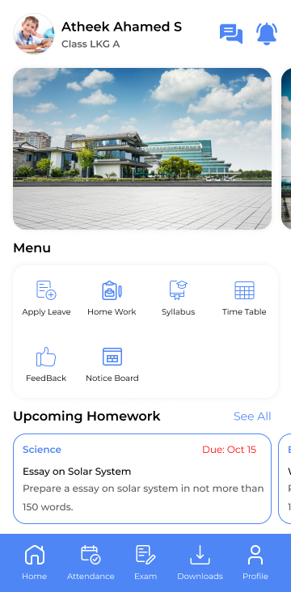
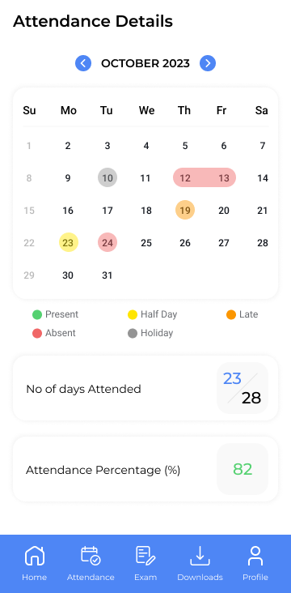
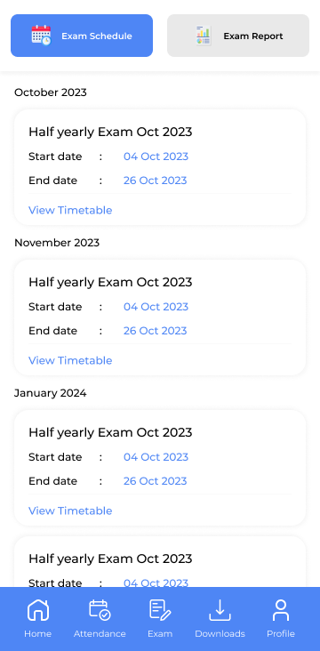
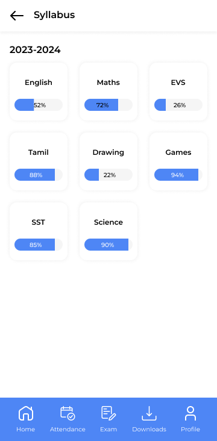
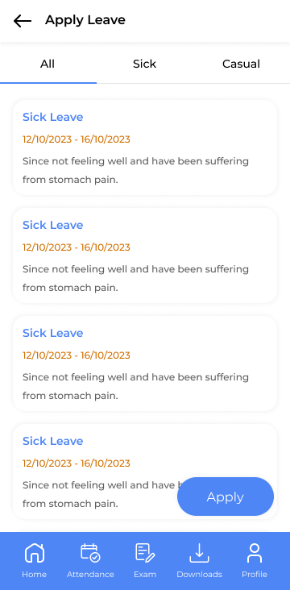
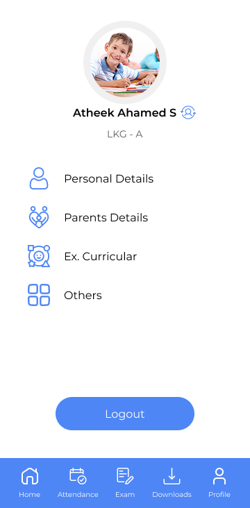

Designing a unified mobile experience that gives parents complete visibility into their child's academic life — attendance, exams, homework, timetables, and leave management — in one accessible app.





My School Pal is a parent-facing school management app that consolidates all academic information — attendance, exam results, homework assignments, class timetables, syllabus progress, and leave applications — into a single mobile experience. The goal: parents should never need to call the school to check on their child's progress.
The app serves parents who want quick answers ("Is my child at school today?", "When is the next exam?") and students who need reference information ("What homework is due?", "What's my class schedule?").
I designed the information architecture around a tab-based navigation (Home, Attendance, Exam, Downloads, Profile) with secondary features accessible through the home dashboard menu.
Student profile with avatar, quick-access menu (Apply Leave, Homework, Feedback, Syllabus, Timetable, Notice Board), upcoming homework feed with due dates, and bottom navigation to primary modules.
Monthly calendar view with five colour-coded states: green (present), red (absent), yellow (half-day), grey (holiday), orange (late). Summary stats showing days attended and attendance percentage at a glance.
Two views — Exam Schedule (chronological list with start/end dates and timetable link) and Exam Report (total marks, percentage, rank, and detailed subject-wise breakdown). Progressive disclosure from summary to detail.
Tabbed interface (Assignment, Syllabus, Other) for accessing downloadable school content. Each item shows subject, title, description, and due date — consistent card pattern across all content types.
Apply leave form (type selector, date range picker, description field) plus leave history view with All/Sick/Casual filters. Each leave card shows dates, reason, and status — a complete audit trail for parents.
Searchable homework list with subject tags, due dates, and assignment descriptions. Cards follow the same visual pattern as the download centre — building familiarity and reducing learning curve.
Subject-wise progress bars showing completion percentage (e.g., English 52%, Maths 72%, Science 90%). Gives parents visibility into curriculum pacing — a feature typically only available to teachers.
Day-based tab navigation (Monday through Saturday) with a structured table showing serial number, subject, and time slot. Clean tabular layout that mirrors the physical timetable students are familiar with.
The home screen surfaces the student's identity, quick-access menu, and upcoming homework. The attendance calendar uses five colour states for instant monthly overview.

The exam module splits into schedule and reports. The syllabus tracker converts curriculum documents into visual progress bars. Leave management provides a complete audit trail.
Every design choice was made to serve non-technical parents who need quick answers, not deep navigation.
The calendar uses green, red, yellow, grey, and orange dots on each date — five states that convey a full month's attendance story without requiring any text. This is the screen parents open most frequently, so it needed to communicate in under 2 seconds. The attendance percentage and days-attended summary at the bottom provides the aggregated view.
Exam results show summary first (total marks, percentage, rank) with a "Detailed Report" link that expands to a subject-by-subject marks table. This prevents information overload — a parent who just wants to know "did my child pass?" gets the answer immediately, while one who wants to see individual subject performance can drill down.
The profile screen includes a "Switch Account" pattern — parents with multiple children can toggle between profiles without logging out. This addresses a real-world scenario that many school apps ignore: families with more than one child enrolled.
Homework, downloads, and leave history all use the same card structure: subject tag → title → description → metadata. Once a parent learns to read one card, they can read every card in the app. This dramatically reduces the learning curve across 8 modules.
Instead of burying homework behind a menu tap, the home dashboard surfaces "Upcoming Homework" directly with due dates. This was a deliberate IA decision — homework is the most time-sensitive information parents need, so it earns prime real estate on the landing screen.
Rather than showing syllabus as downloadable PDFs, I visualised curriculum completion as subject-wise progress bars. This transforms a static document into an at-a-glance status indicator — parents can immediately see which subjects are behind schedule.
This project showcases my range — while most of my portfolio demonstrates enterprise B2B work (facility management, ERP), My School Pal is a B2C consumer app where emotional design, simplicity, and accessibility for non-technical users are the primary constraints. Different audience, different design muscles.
Eight very different content types (calendars, tables, cards, forms, progress bars, reports) unified under a single navigation model. The 5-tab bottom bar handles primary modules while the home dashboard menu provides a second tier of access — a pattern that scales without overwhelming.
The colour-coded attendance calendar uses both colour and position to convey meaning — an important accessibility consideration. The app is designed for parents who may have limited English proficiency, so the visual language (progress bars, calendar dots, colour badges) carries the primary meaning.
I'd add push notifications for homework deadlines and exam schedule changes. I'd also explore a parent-teacher chat feature within the app, and add multi-language support (Hindi, Tamil, regional languages) to reach a broader Indian school market.